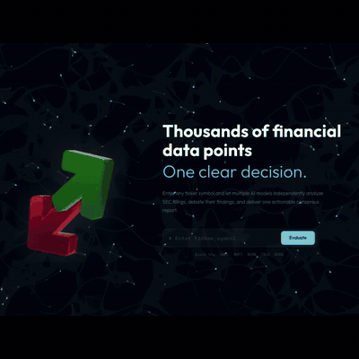

A stock evaluation engine that orchestrates up to 9 LLMs to independently analyze SEC filings, then forces them to debate their disagreements, producing bias-reduced financial ratings through cross-model consensus.

Stock analysis is drowning in information. SEC filings are dense, financial statements span dozens of pages, and understanding a company's real health takes hours of reading. LLMs are excellent at condensing this data into narratives, but a single LLM can hallucinate numbers, cherry-pick data points, and bias its own conclusions.
The core question: how do you get reliable AI-powered financial analysis when you can't trust any single model? The answer was to make them check each other. Orchestrate multiple LLMs in parallel, compare their independent evaluations, and resolve disagreements through structured multi-round debate.
The core innovation. Instead of trusting one LLM, multiple models independently evaluate 8 financial metrics. Their ratings are then harmonized: if models agree, the rating stands. If they conflict, they enter a structured multi-round debate until consensus is reached or the metric is flagged as complex.
# The full financial evaluation pipeline
1. INGEST SEC 10-Q filings → chunk → embed → pgvector
Structured financials → format as tables → cache
2. ANALYZE N LLMs evaluate 8 metrics in parallel
Each rates: Excellent / Good / Neutral / Bad / Horrible
Fast tier: numbers only | Deep tier: RAG + reasoning
3. HARMONIZE Compare all ratings per metric
All agree → aligned | Same tier → majority wins
Cross-tier conflict → flagged for debate
4. DEBATE LLMs defend positions in N rounds
Can ACCEPT / ADD / REJECT others' arguments
>50% consensus → adopted | else → "COMPLEX"Models are split into fast and deep tiers. Fast models crunch the numbers from injected financial tables. Deep models use a retrieval tool to pull qualitative context from SEC filings (segment breakdowns, margin drivers, management commentary), producing debate-ready reasoning. The biggest discovery: the quality jump is fast to deep, not deep to premium. Cheap models ignore retrieval instructions regardless of prompt engineering.
from langchain.agents import create_agent
# Two-tier model registry
MODELS = {
# Fast tier: 3-8s, ~$0.05/eval — numbers only
"grok_fast": "xai:grok-4-fast-non-reasoning",
"openai_fast": "openai:gpt-5-mini",
"claude_fast": "anthropic:claude-3-haiku",
"mistral_fast": "mistral-small-2506",
# Deep tier: 21-52s, ~$0.12-0.25/eval — RAG + reasoning
"grok_deep": "xai:grok-4-fast-reasoning",
"openai_deep": "openai:gpt-5.1",
"claude_deep": "anthropic:claude-sonnet-4-6",
"gemini_deep": "google_genai:gemini-2.5-pro",
"mistral_deep": "mistral-large-2411",
}
# Each model becomes a LangGraph agent with tool access
agent = create_agent(
model=MODELS[model_key],
tools=[retrieval_tool],
prompt=system_prompt,
)
# All route through OpenRouter (unified billing)
# Retry: OpenRouter → OpenRouter → Direct provider# Run all selected LLMs in parallel
results = await asyncio.gather(*[
analyze_single_model(
ticker=ticker,
model_key=key,
financial_tables=cached_tables,
retrieval_tool=rag_tool,
)
for key in selected_models
], return_exceptions=True)
# Each model outputs: 8 metrics × (rating + reason) + summary
# Cached by ticker + model + filing_date — skip if already evaluatedSEC 10-Q filings are ingested, cleaned of boilerplate, chunked respecting markdown headers, and embedded into PostgreSQL with pgvector. Deep-tier models use a LangChain retrieval tool to search these chunks by cosine similarity, pulling qualitative context that raw financial tables can't provide.
from langchain.text_splitter import RecursiveCharacterTextSplitter
splitter = RecursiveCharacterTextSplitter(
chunk_size=2500, chunk_overlap=300,
separators=["\n## ", "\n### ", "\n\n", "\n", " "],
)
# SEC 10-Q → Clean boilerplate → Chunk → Embed → pgvector
chunks = splitter.split_text(cleaned_filing)
chunks = [c for c in chunks if len(c) > 100] # filter noise
# Embedding: all-MiniLM-L6-v2 (384 dims, HuggingFace)
# Retrieval: cosine similarity, top 8 chunks filtered by ticker
# Non-US stocks: Yahoo Finance fallback (no SEC filings)When models disagree on a metric, they enter a structured debate. Each LLM defends its position, reviews others' arguments, and can change its rating. Position changes are tracked throughout. A sliding-window compression keeps token costs flat; without it, costs grow exponentially per round.
async def run_debate(metrics_to_debate, llm_analyses, rounds=2):
for round_num in range(1, rounds + 1):
if round_num > 1:
# Compress earlier rounds to control token costs
# Flattens R4/R5 costs to roughly R2 levels
history = await _compress_history(debate_log, mistral_fast)
positions = await asyncio.gather(*[
get_model_position(model, metric, history)
for model in models
for metric in metrics_to_debate
])
# Track: "Claude changed: Good → Neutral"
# Final: >50% agree → rating adopted, else → "COMPLEX"
return build_consensus(all_positions)Every architectural choice has a cost. Here are the key tradeoffs I made and why.
# ADR-001: OpenRouter as unified gateway
Decision: Route all 9 models through OpenRouter first
Why: Single billing, cost tracking, unified API format
Tradeoff: Extra latency hop, mitigated by direct-provider fallback
# ADR-002: Two-tier model split (fast vs deep)
Decision: Fast models skip RAG, deep models get retrieval tool access
Why: 10x cost difference. Let users choose speed vs depth
Tradeoff: Fast ratings lack qualitative reasoning
# ADR-003: pgvector over dedicated vector DB
Decision: Embeddings in PostgreSQL with pgvector extension
Why: Single database for everything, simpler infra
Tradeoff: Scaling limits vs Pinecone/Weaviate, but sufficient for filing data
# ADR-004: Debate compression via sliding window
Decision: Summarize earlier debate rounds before feeding next round
Why: Without it, token costs grew exponentially per round
Tradeoff: Loses fine detail from early rounds
# ADR-005: Frontend-driven pipeline orchestration
Decision: Frontend calls each pipeline step, holds intermediate state
Why: Real-time progress UI, users see each phase live
Tradeoff: More API calls, but enables per-step UX feedback
# ADR-006: Removed Gemini Flash entirely
Decision: Dropped gemini-2.5-flash from available models
Why: Uncontrollable tool-calling loops inflated costs 30×
Tradeoff: One fewer fast-tier option (gemini_deep still available)